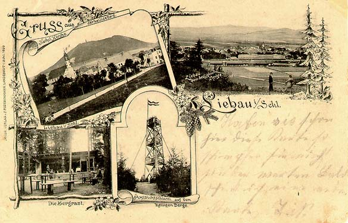
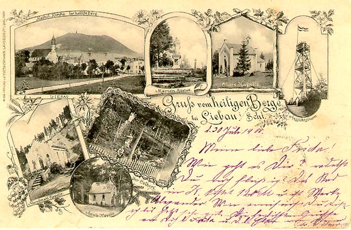
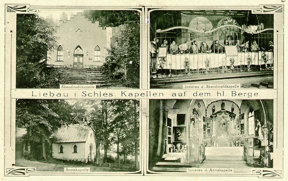

Miêdzy Lipienic¹ a Lubawk¹ jest miejsce zwane Œwiêt¹ Gór¹. To ta góra na której stoi dziœ przekaŸnik TV, ta góra z wyci¹giem narciarskim. Kiedyœ by³o to miejsce gdzie sta³y piêkne kaplice, niestety dzisiaj mo¿na zobaczyæ tylko ich ruiny .....
| Trzy widoki na Lubawkê i Œwiêt¹ Górê w tle. | |
| Lubawska fabryka mebli i znowu Œw. Góra w tle. | |
| Na tej starej pocztówce widaæ jak piêknie Œw. Góra widoczna jest na panoramie masta. | |
|  | Tutaj widaæ wie¿ê widokow¹ która sta³a kiedyœ na szczycie Œw. Góry. |
|  | Na kolejnych kartkach widoczne s¹ kaplice ze Œw. Góry. |
 |
|
 |
|
|  | |